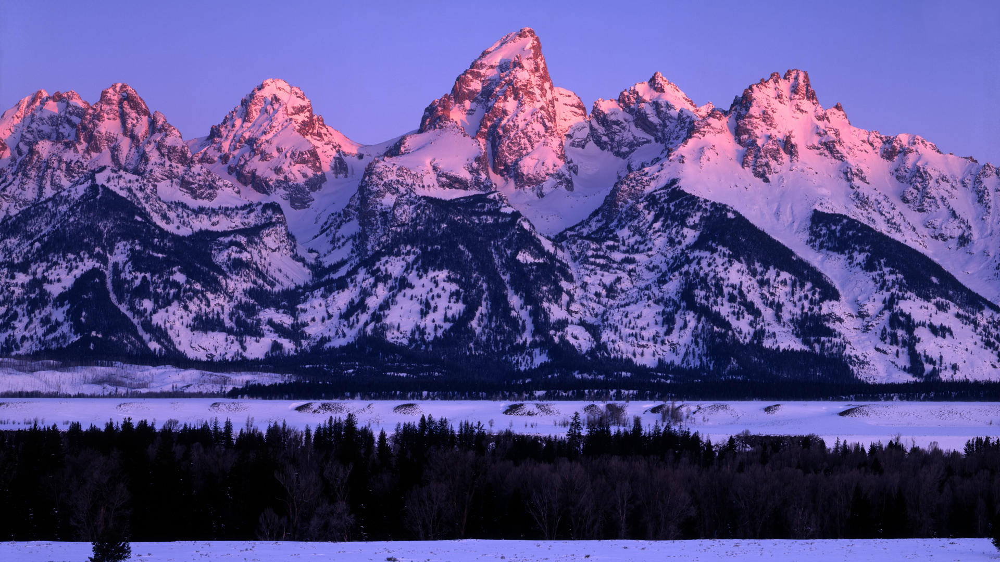
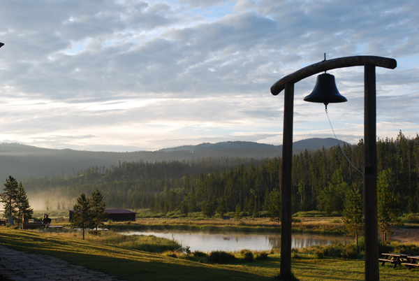
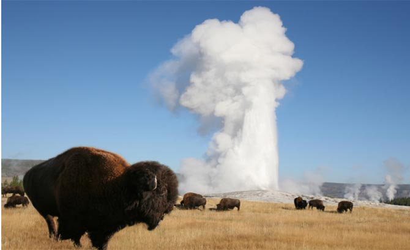

My First Experience with the Tetons
For five summers I worked at a camp in Wyoming called Teton Valley Ranch Camp. The very first time I worked there I actually flew into Salt Lake City and someone from camp picked a few of us up from the airport and drove us to camp. Little did I know even after the flight and the drive to Jackson Hole, Wyoming, it was still going to be another 2 hours until we actually arrived at camp. The first time I saw the mountains was absolutely breathtaking. The setting sun backlighting the peaks was one of the most amazing things I have ever seen and I will always remember it!

Teton Valley Ranch Camp
To begin with, my position at camp was as a cook in the kitchen. It was honestly one of the most fun jobs I have ever had. My schedule was great. I worked two meals out of the day and for the rest of the day I could basically do whatever I wanted, hang out in the cabin, go into town if someone was driving, do any of the activities with the campers. I even got to go on one of the camping trips for a couple days with one of the groups of kids. The one thing I looked forward to each year was my trip to Yellowstone National Park. I always made sure to plan some time to do a whirlwind tour for a day.

Yellowstone National Park
Every year, one of the other kitchen workers and I would make sure to plan a day that we could both go to Yellowstone. We would wake up really early in the morning(about 5am), and have our lunch and snacks all packed and ready to go and make the drive over the mountain pass to begin our day excursion. An interesting point that I'm sure a lot of people don't realize is that if you get to the gates before 7am when the park rangers get there you don't actually have to pay to get in. Shhh that'll be our little secret. Anyway, yellowstone really is a great national park and if you haven't been yet I would highly recommend you make time to visit.